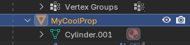
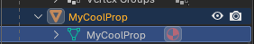
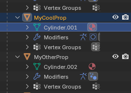

Features
Blender Interchange takes blend files and converts the blend file contents into individual assets. The following asset types are supported from blender to unreal engine.
| Feature | GLTF | USD | FBX |
|---|---|---|---|
| Static Meshes | YES | YES | YES |
| LOD Support | YES | YES | YES |
| Collision Import | YES | NO | YES |
| Skeletal Meshes | YES | YES | YES |
| Materials | Limited* | Limited* | Limited |
| Morph Targets | YES | YES | YES |
| Skeletal Animations | YES | YES | YES |
| Morph Target Animations | YES | YES | YES |
| Static Mesh Animations | YES | YES | YES |
| Levels | YES | YES** | YES** |
| Reimport | YES | YES | YES |
*Materials are created and assigned but will not match any complex material graph created in blender. It is recommended to create materials in unreal separately using unreal's material graph. USD supports MaterialX which is a generic way of exporting material graph information. As of time of writing unreal and blender seem to have limitted support for materialX but supporting material transfer is planned in the future.
** USD imports duplicates due to blender exporting duplicates and generally not supported advanced USD exports as of Blender 5.0
A Note on FBX
FBX can be a bit finicky. One thing to watch out for when importing FBX is that the name of the mesh asset is used instead of the instance in the blender scene which is what you might expect. Make sure to properly name each mesh in your scene appropriately.
Here is a really common thing that can happen. You make something in blender and the object is properly named to what you want but the mesh is named something default. Cube, cylinder or whatever primitive you made the mesh from.
FBX will use the mesh not the object so make sure to name it properly. This will be named Cylinder when importing which is not what you want.

You should rename it to this. The orange node actually does not matter technically for FBX but may be used in other file formats.

We do not currently perform rename fixups like this as part of our pipeline, but if this is something you want reach out to us in our discord and let us know. We currently have not added it because sometimes multiple objects in a scene share the same mesh data and a rename would be undesirable.
https://discord.gg/fc2HYwJS
A Second Note on FBX
The above issue can actually cause a lot of issues if you have multiple meshes in your scene that all started from the same primitive or were duplicated.
This looks like it will import 2 meshes but it will only import 1 and throw away the other one. FBX ignores the bit after the dot so it will just see Cylinder twice.

It's worth noting that we recommend using the default file format of GLTF to avoid issues like this with FBX.